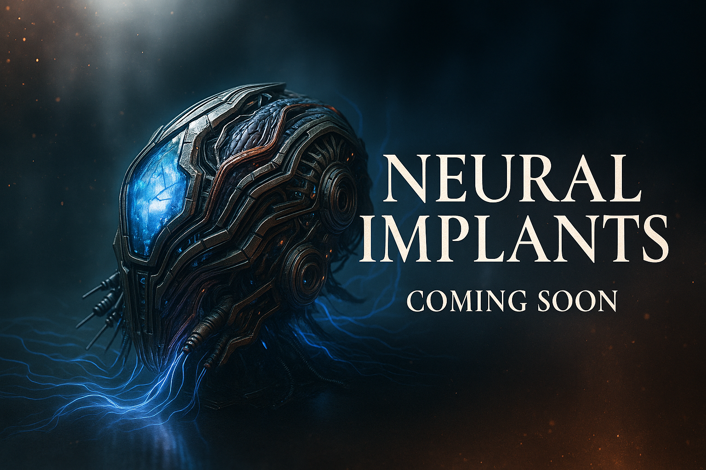

The Etherstones
112 mystical cosmic stones, each holding unique elemental energies. Originating from an ancient dimension beyond comprehension.

Neural Implants
400 biomechanical micro-implants engineered for direct brain integration. Each one carries hidden power. Launching soon.